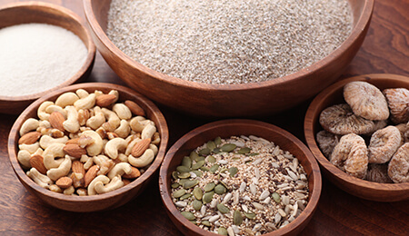
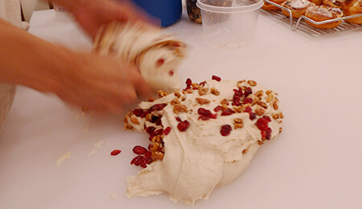

心に響くものをつくるためには、自然（神）の力で生み出されたものに感謝し収穫し、集まった材料の景色を確認し、素材を生かしてそれぞれが引き立てあうよう自然と対話しながら組み立て、努力を惜しまず祈りを捧げながら丁寧に仕上げていく。
そうすることで、食べた人の心に響きわたり、頭の中に景色が広がり、無理なく体に染み渡っていく。
そして、自然が立体的に見え生命力を感じたとき本当の美味しさを感じて頂けるのだと思います。
酵母の無い生地は膨らみません、酵母と酵素が生地をゆっくり発酵させて旨みを創り、膨み、パンが創られるのです。
発酵は創造される神秘の世界です、ですから世界中で人にとって古来から発酵と神の関係は深く関わりがあるのだと思います。

パンは、天からもたらされる水と空気中の酵母、大地から収穫される小麦などの穀物、海から採れる海塩を手の中で纏めたもので、パンは地球そのものなのです。
フランスではパン創りはブール（Boule）＝地球を創ること、すなわちパン創りの仕事は「神の仕事」という考えがブーランジェリーの精神になっているのです。
効率化を求め工業的に生産・加工・製造されたものは、簡単に短時間で生産でき、体に感じる表面的な香り、味等の刺激（ダメージ）、そして脳への刺激（ダメージ）により美味しかったような妄想を一時的に作り出しますが、やがて体を蝕み、脳を蝕み、心まで蝕むと私は思っています。
食べて頂く人のことを思えば、材料の選択も仕上げていく努力も惜しめません、こだわり（執着）ではなく、利他を考えれば見えてくる選択もあると思います。